My Projects
GNAT
Implementations of two different techniques of achieving real-time networking without a central server.
C++ library with logic for establishing network connections and sending UDP packets between participants. This project was developed alongside my Newcastle University dissertation paper, a link to which can be found below.
Client-Hosted server
Prioritizes consistency between all participants over speed of message broadcast. Useful for implementations for physics servers.
Peer-to-Peer Communication
Fast message transfer but can lead to desynchronization between participants especially in environments prone to packet loss or weak connections.
Midori Engine
Custom game engine built from scratch.
The project architecture is based on the implementation of the Hazel Engine by Yan Chernikov. It is constantly evolving as I add new features to the engine when using it in my university projects.
The Renderer
The engine currently only supports OpenGL however the implementation is done in such away that the API is abstracted away from the implementation allowing for easy extention into other APIs in the future.
Future Developement
The primary goal in the process of creating this engine, is to create a tool that is useful for others and myself when creating any real time applications. Alongside being a learning opportunity for myself to investigate what runs the games we play, I plan on implementing an easy interface for adding multiplayer funtionality in a way that I find more intuitive than existing solutions.
Demo
Flip

Fast pased platformer! How long can you last?
Game Mechanics
Movement was designed in a way to imitate the smoothness and responsiveness of the Super Meat Boy games. Moving left and right happens instantly with no acceleration and holding the jump button, allows for a higher jump. One flip can be done after leaving the ground, however this can be refreshed by touching a wall. Controller is recommended!
The Gameplay
The timer is constantly drianing and the only way to refill it, is to kill the ghosts that spawn around you; the longer you can survive, the higher the score. Be careful though! if you get too close to the ghosts, they will attack ending the run and giving your score a harsh penalty.
Art
The art used in the map tiles has been found on the Unity Asset Store but all other art has been drawn and animated by me!